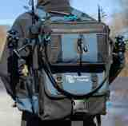

THE GRUMPYWERKS EQUIPMENT STORE
See the Gear. Find What You Need.
Fishing tackle, drift-fishing equipment, sonar and boating essentials. Choose a category below to shop matching equipment on Amazon.
Affiliate disclosure: As an Amazon Associate I earn from qualifying purchases. Shopping and checkout take place on Amazon. The tackle-storage category includes a real equipment photograph; other categories use illustrations, not specific product listings.

MORE FROM GRUMPYWERKS
Fishing Books & Drift Plans
Explore our own guides, maps and reservoir-fishing books. These are separate from the Amazon equipment categories above.
Explore Books & GuidesThese links open category searches rather than endorsements of individual listings. Product availability and prices are determined by Amazon. We do not process payments, ship merchandise or handle Amazon returns.